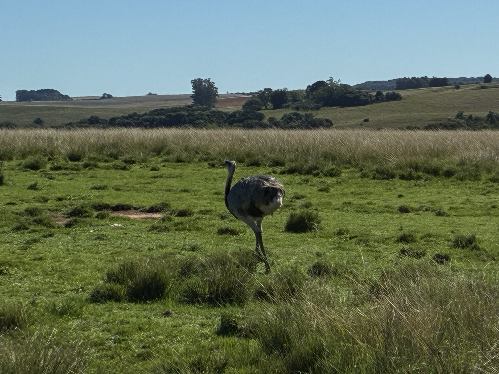
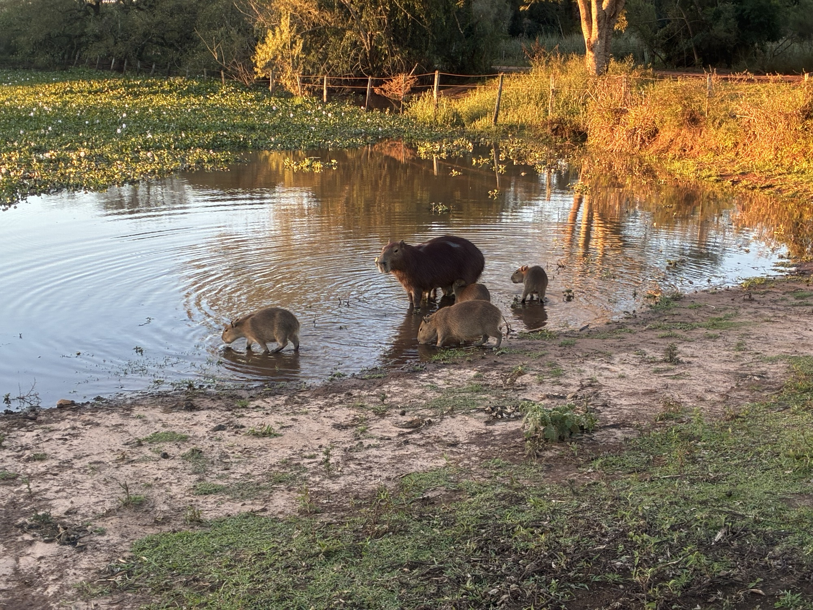

Natureza e Fauna
Capivaras, emas e aves convivem com a lida do campo em meio à paisagem aberta do pampa.
Vida selvagem em casa
Na Fazenda da Cascata, a fauna nativa vive à vontade. Os campos abertos, os banhados e os cursos d'água formam o ambiente perfeito para que os animais se mostrem sem medo, muitas vezes a poucos passos da sede.

Capivaras
O maior símbolo da fauna da fazenda. Um bando de capivaras pasta livremente perto da sede, sem se incomodar com o movimento. Ao entardecer, reúnem-se às margens da água, formando uma das cenas mais marcantes da propriedade.
Galeria das capivaras
Emas e aves
As emas, maiores aves das Américas, cruzam os campos em passo firme. Junto delas, diversas aves nativas habitam a paisagem aberta do pampa, parte de um ecossistema que a fazenda ajuda a preservar.
Galeria das emas e avesO pampa ao redor
Campos que se estendem até o horizonte, coxilhas suaves, banhados e o pôr do sol dourado compõem o cenário da fauna. É nesse equilíbrio entre a criação de gado e a natureza que a Fazenda da Cascata se mantém.
Galeria das paisagens